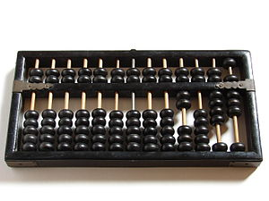

Breve storia dell'informatica
Se abbiamo capito che l'informatica è la scienza che studia l'automazione dell'elaborazione e della trasmissione delle informazioni sarà facile dedurre come i primi strumenti informatici (gli "antenati" dei computer) non siano altro che calcolatori...
Gli antenati dei computer
L'abaco (1200 A.C)
E' lo strumento più antico di calcolo di cui si conosca traccia. I primi esemplari risalgono al 1200 A.C. in Cina e Mesopotamia. (https://it.wikipedia.org/wiki/Abaco). Usato anche da greci e romani. E alle elementari...

I calcolatori meccanici (1600-1800)
La Pascalina è il nome della prima calcolatrice meccanica, che deve il nome al suo inventore, il matematica, fisico e filosofo francese Blaise Pascal, che nel 1643 realizzò una macchina in grado di fare meccanicamente addizioni e sottrazioni.

Charles Babbage, matematico inglese, costruì nel 1834 il primo calcolatore digitale automatico di uso generale (addizioni, sottrazioni, divisioni, moltiplicazioni e altre operazioni), che chiamò macchina analitica e costituì un modello per tutti i successivi calcolatori digitali.

Curiosità 1
Vista l'imponenza degli ingranaggi che aveva progettato, Babbage decise di utilizzare un telaio da sartoria per la struttura portante della macchina.
Inoltre il suo progetto comprende il primo esempio di "scheda perforata", ovvero il primo esempio di codice memorizzato in un hard disk.
Curiosità 2
L'assistente di Babbage, Ada Lovelace è diventata anche più famosa di lui nella storia dell'informatica.
Avendo creato un sistema teorico per la programmazione della macchina analitica, viene considerata la prima programmatrice della storia (NON il primo programmatore donna, la prima in assoluto!!!).
In suo onore nel 1979 è stato inventato il linguaggio di programmazione ADA!
I calcolatori elettronici (ventesimo secolo)
L'ingegnere giapponese Akira Nakajima nel 1930 intuisce il legame fra l'algebra booleana (la teoria del vero/falso) e la logica dei circuiti elettronici: nascono i primi circuiti elettronici in grado di risolvere operazioni logiche e quindi si apre l'era dei calcolatori elettronici.
Nel 1924 nasce IBM, la prima azienda a fare dell'informatica il suo core business, che darà una forte spinta alla progettazione di hardware "in miniatura" (i calcolatori elettronici del 1930 erano grandi come una casa! Circa 6 stanze...).
Le idee illuminanti
Più di qualsiasi altra cosa sono ancora le idee a cambiare il mondo!!! Le due più importanti per la storia dell'informatica sono:
La macchina di Turing (1936)
Alan Turing è un famoso matematico inglese fissato con le mele che il governo inglese assume per decriptare i messaggi cifrati dall'esercito tedesco con la celebre macchina ENIGMA.
Per riuscire in questo intento implementa nel calcolatore "Colossus", costruito nel 1943, seguendo i dettami dello strumento teorico da lui stesso concepito qualche anno prima: La Macchina di Turing (1936)!
La MdT è una macchina ideale che è in grado di manipolare dati presenti in un ipotetico nastro infinito, alterandoli secondo un insieme prefissato di regole prestabilite, per raggiungere uno scopo.
L'architettura di Von Neumann (1945)

Fino a questo traguardo della scienza umana i computer non erano altro che "calcolatrici molto veloci". Certo, potevi decidere che tipo di operazione fare, potevi fare un sacco di operazioni a velocità incredibili (per l'epoca), ma niente che avvicinasse quei mastodonti a ciò che noi oggi chiamiamo computer.
Fino a questa idea.
L'idea è quella di progettare un dispositivo generico in grado di eseguire potenzialmente qualunque operazione. L'hardware gli permetterà di ragionare, mentre le istruzioni per farlo dovranno venire dal software! L'architettura di Von Neumann descrive come dovrebbe essere fatto questo hardware. Non è una "architettura" in senso stretto, è un progetto da implementare.
Nasce il computer moderno, come lo conosciamo noi.
Dopo la creazione del modello di Von Neumann si comprende come la Macchina di Turing sia l'anello mancante che permette di automatizzare l'esecuzione degli algoritmi! Ecco l'idea su cui si basa l'implementazione delle moderne CPU!
Tutti i dispositivi informatici di oggi (computer, notebook, smartphone, tablet, smart TV, etc...)
sono basati sull'architettura di Von Neumann
ed eseguono programmi come implementazioni di una Macchina di Turing!
I Sistemi Operativi
UNIX, il primo sistema operativo (1960-1975)
Negli anni '60 le aziende che più di tutte utilizzavano l'informatica erano le aziende telefoniche, in particolare il colosso americano AT&T. Nei suoi laboratori di ricerca, i Bell Laboratories, succedono le cose più interessanti per la storia informatica del periodo.

Lì, Kevin Thompson progetta il sistema operativo UNIX, che dovrà gestire tutto il traffico telefonico dei centralini d'America.
In quegli stessi laboratori il suo collega Dennis Ritchie sviluppa il linguaggio C (terzo tentativo dopo i linguaggi... capito no?), un linguaggio procedurale altamente performante.
Quando i due iniziano a collaborare, UNIX viene completamente riscritto in linguaggio C, diventando un sistema operativo multiutente e multiprocesso, con supporto al networking e quindi allo scambio di informazioni fra 2 sistemi UNIX.
In quel periodo le aziende non avevano ancora chiaro come il software potesse essere una proprietà intellettuale molto rilevante: AT&T distribuisce gratuitamente il codice del sistema operativo di loro proprietà alle università per permettere loro di studiarlo ed eventualmente migliorarlo!
UNIX oggi!
UNIX è l'antenato di tutti i sistemi operativi moderni (Linux, Android, MacOS, iOS, BSD: praticamente tutti tranne Windows).
I componenti fondamentali di tutti questi sistemi operativi sono ancora scritti in linguaggio C!!!
Nasce l'informatica moderna!!!
BSD e i suoi derivati (1977 in avanti)
La versione di UNIX rivisitata, rielaborata e modificata dai docenti e studenti dell'università di Berkeley della California del Sud viene nominata BSD (Berkeley Software Distribution).
Il sistema operativo BSD non è più utilizzato e sviluppato, ma da esso è partita una famiglia di sistemi operativi liberi molto diffusi, soprattutto in ambito mainframe e network management, fra cui vale la pena ricordare:
- FreeBSD, su cui si basa il firewall/proxy del liceo
- FreeNAS, utilizzato su dispositivi di archiviazione di rete
- DarwinOS, sistema libero sovvenzionato da Apple, su cui si basa Mac OS
- Orbis OS, il sistema operativo della PlayStation
Valeva la pena citarli, vero??
PS
L'ho detto che anche il servizio Netflix si basa su FreeBSD?
E che lo stesso vale anche per i server Whatsapp?
Apple (1976 in avanti)
Nel 1976 Steve Jobs, Steve Wozniak e Ronald Wayne fondano la Apple Computers, azienda produttrice di hardware prima e successivamente di hardware e software.

Nel garage di casa Jobs, questa "startup" inizia la sua guerra personale contro il colosso del tempo: la IBM, iniziando su piccolissima scala la produzione di computer destinati agli hobbisti e non più ad aziende e lavoratori.
I prodotti del primo periodo sono basati su processori PowerPC e su un sistema operativo proprietario scritto da zero all'interno dell'azienda: il Macintosh.
Dopo la prima grande crisi con Steve Jobs e al suo reintegro circa un anno dopo, nascono i prodotti del secondo periodo, basati su processori Intel e un sistema operativo
proprietario basato però su Darwin OS: il sistema Mac OS X.
Dopo la seconda grande crisi e l'ennesimo reintegro di Jobs, parte il progetto iPhone: Apple produce il primo smartphone al mondo, basato su sistema operativo iOS, anch'esso
derivato da Darwin OS.
Microsoft (1975 in avanti)
Microsoft è stata fondata da Bill Gates e Paul Allen. Ben presto si unirà a loro l'amico Steve Ballmer a formare il trio che renderà la Microsoft un'azienda leader a livello mondiale nel settore dell'Informatica.
Al contrario di Apple, Microsoft produce unicamente software, dapprima programmi specializzati per i fogli di calcolo e per la programmazione in BASIC, poi un sistema operativo completo e una suite da ufficio.
All'inizio degli anni '80, il primo mattone che farà le fortune di Microsoft: acquista un sistema operativo di base da una piccola società di Seattle, lo migliora un pò e con esso stringe un accordo di fornitura con IBM, per distribuirlo su tutti i loro computer.
Anni dopo la mossa che cambia per sempre le sorti dell'azienda e la storia (dell'informatica): esce il nuovo sistema operativo Windows con supporto per la grafica e il mouse.
Nel frattempo un altro dei progetti Microsoft ha fortuna: la suite da ufficio Microsoft Office, che diventerà il loro secondo progetto di punta.
Gates e Jobs
Apple e Microsoft e i loro leader carismatici caratterizzeranno la storia dell'informatica (e non solo) degli anni a venire. Il loro successo sta nel fatto di essere riusciti a portare l'informatica nelle case di tutte le persone!
Prima di Steve Jobs e Bill Gates l'informatica era una scienza settoriale a cui si dedicavano solo aziende specializzate. Con la loro discesa in campo l'informatica diventa uno strumento alla portata di tutti.
GNU, Linux (1991 in avanti) e Android
Il problema del sistema operativo UNIX era il fatto di essere un sistema operativo proprietario: poteva essere studiato in ambito universitario, ma non utilizzato in qualunque ambito all'esterno della AT&T.
Nel 1984 Richard Stallman, promotore della Free Software Foundation, avvia il Progetto GNU
per riscrivere tutte le parti di UNIX allo scopo di ottenere un sistema operativo completo e libero, utilizzabile da chiunque.
L'acronimo GNU
GNU è un acronimo ricorsivo, che significa G.N.U. = GNU is Not Unix.
Umorismo informatico 
Nel 1991 lo studente finlandese Linus Torvalds completa il progetto GNU progettando il kernel, denominato Linux per il sistema operativo libero e aperto
che verrà chiamato appunto GNU/LINUX.
Il suo progetto sarà talmente innovativo che diventerà il kernel di sistemi che vanno dal piccolo smartphone con sistema operativo Android, ai server dei maggiori servizi della rete Internet, fino ad arrivare a (tutti i) Top500 supercomputers.
Sì... tutti i 500 computer più potenti del mondo funzionano con kernel Linux.
L'era di Internet
A metà degli anni '70 Il dipartimento della difesa americano commissiona ai laboratori Bell,
dove Thompson e Ritchie lavoravano, la creazione di una rete di collegamento fra i centri strategici militari
in grado di scambiare velocemente informazioni anche in caso di attacco armato:
nasce la rete ARPAnet, l'antenata di Internet.
Negli anni ottanta negli Stati Uniti si termina lo sviluppo della rete ARPANET, pubblicando le specifiche della suite di protocolli TCP/IP,
che segnano l'inizio dell'era di Internet.
Nel 1989, al CERN di Ginevra, il fisico Tim Berners Lee inventa uno strumento per diffondere in tempo reale informazioni e articoli
scientifici: nasce il World Wide Web, basato sul protocollo HTTP, lo schema URL e il linguaggio HTML.
Nel 1994 esce il primo browser a diffusione mondiale: Netscape Navigator.
L'anno dopo Microsoft risponde con il sistema operativo Windows 95 con incluso il browser Internet Explorer:
in questo modo gli utenti Windows sono "guidati" ad usare Il browser Microsoft invece che installare Netscape, che perde importanti quote di mercato.
Undici anni dopo Microsoft perderà il processo per concorrenza sleale, quando ormai Netscape era fallita...
era iniziata la guerra dei browser!
L'egemonia di Internet Explorer sarà spezzata anni dopo dal browser Mozilla Firefox.
E adesso? Siamo forse in una nuova egemonia??
Nel 2017 ho iniziato a scrivere queste righe per voi. Spero vi siano piaciute.